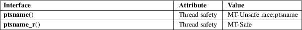

ptsname, ptsname_r − get the name of the slave pseudoterminal
Standard C library (libc, −lc)
#include <stdlib.h>
char
*ptsname(int fd);
int ptsname_r(int fd, char
buf[.buflen], size_t
buflen);
Feature Test Macro Requirements for glibc (see feature_test_macros(7)):
ptsname():
Since glibc 2.24:
_XOPEN_SOURCE >= 500
glibc 2.23 and earlier:
_XOPEN_SOURCE
ptsname_r():
_GNU_SOURCE
The ptsname() function returns the name of the slave pseudoterminal device corresponding to the master referred to by the file descriptor fd.
The ptsname_r() function is the reentrant equivalent of ptsname(). It returns the name of the slave pseudoterminal device as a null-terminated string in the buffer pointed to by buf. The buflen argument specifies the number of bytes available in buf.
On success, ptsname() returns a pointer to a string in static storage which will be overwritten by subsequent calls. This pointer must not be freed. On failure, NULL is returned.
On success, ptsname_r() returns 0. On failure, an error number is returned to indicate the error.
|
EINVAL |
(ptsname_r() only) buf is NULL. (This error is returned only for glibc 2.25 and earlier.) | ||
|
ENOTTY |
fd does not refer to a pseudoterminal master device. | ||
|
ERANGE |
(ptsname_r() only) buf is too small. |
For an explanation of the terms used in this section, see attributes(7).

A version of ptsname_r() is documented on Tru64 and HP-UX, but on those implementations, −1 is returned on error, with errno set to indicate the error. Avoid using this function in portable programs.
ptsname():
POSIX.1-2008.
ptsname_r() is a Linux extension, that is proposed for inclusion in the next major revision of POSIX.1 (Issue 8).
ptsname():
POSIX.1-2001. glibc 2.1.
ptsname() is part of the UNIX 98 pseudoterminal support (see pts(4)).
grantpt(3), posix_openpt(3), ttyname(3), unlockpt(3), pts(4), pty(7)